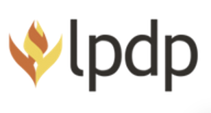

| 1. | Judul | : | HematDaya Faskes: Pemantauan dan Analitik Konsumsi Energi Berbasis Data untuk Rumah Sakit dan Klinik |
| 2. | Ketua Tim Pelaksana | ||
| a. Nama Lengkap | : | Ahmad Widardi | |
| b. Jenis Kelamin | : | L | |
| c. NIK | : | 3318080205960001 | |
| d. Jabatan Struktural | : | – | |
| e. Jabatan Fungsional | : | Software Engineer (profesional) | |
| f. Institusi | : | ||
| g. Alamat | : | ||
| h. Telpon/Faks | : | 085642196188 | |
| i. Alamat Rumah | : | Yogyakarta | |
| j. Telpon/Faks/E-mail | : | 085642196188 / awidardi@gmail.com | |
| 3. | Lembaga Mitra Riset (*) | : | – (belum ada) |
| Alamat (*) | : | – | |
| 4. | Anggota Tim Pelaksana | ||
| No. | Nama | NIK/NIP/NIDN | Institusi |
|---|---|---|---|
| 1. | Erwin Eko Wahyudi, S.Kom., M.Cs. (Dosen) | NIDN 0028109403 | Universitas Gadjah Mada |
| 2. | Sidiq Tri Pratikto (Profesional) | 3674063007960003 | |
| 3. | (Mahasiswa) | 3674060510030004 | Universitas Pamulang |
(*) diisi bila ada.
| Bidang Strategis | ☐ Digitalisasi; AI dan Semikonduktor ☐ Energi ☐ Hilirisasi dan Industrialisasi ☑ Kesehatan ☐ Pangan |
Rumah sakit dan klinik beroperasi sepanjang hari dengan beban listrik yang besar dan beragam: pendingin ruangan, sterilisator, lemari pendingin vaksin dan obat, serta pompa. Konsumsi energinya tinggi, tetapi pengelola fasilitas umumnya hanya melihat satu angka, yaitu tagihan bulanan. Beban mana yang boros, apakah pendingin menyala saat poli tutup, dan berapa energi per meter persegi atau per tempat tidur belum terpantau secara terukur.
HematDaya Faskes adalah aplikasi seluler dan web yang membaca data konsumsi listrik per perangkat dari meter pada beban terpilih atau dari catatan historis yang diimpor. Aplikasi menghitung energi dan estimasi biaya, menandai konsumsi di luar jam layanan pada perangkat poli, mendeteksi kenaikan konsumsi dibanding minggu-minggu sebelumnya, dan menghitung intensitas konsumsi energi (IKE) per m² dan per tempat tidur, lengkap dengan bukti dan keterbatasan datanya. Beban kritis seperti lemari pendingin vaksin dan obat hanya dipantau: aplikasi tidak mengendalikan perangkat, tidak pernah menyarankan menghentikannya, dan tidak memuat data pasien.
Pengguna potensial adalah pengelola sarana dan teknisi rumah sakit dan klinik, termasuk jaringan fasilitas Muhammadiyah–'Aisyiyah sebagai peluang. Nilai komersialnya berupa langganan per fasilitas dan paket meter plus aplikasi; manfaatnya penghematan biaya listrik dan data terukur menuju layanan kesehatan yang lebih hijau.
Prototipe seluler dengan data sintetis sudah berjalan (TKT 3). Selama program tim menargetkan TKT 4 melalui uji terbatas dengan data simulasi dan, bila izin fasilitas terpenuhi, data listrik satu fasilitas nyata.
Sub-tema: Sustainable and Green Healthcare (Klaster 08, Bidang Strategis Kesehatan), dengan problem statement “konsumsi energi rumah sakit dan klinik tinggi dan belum terpantau secara terukur” [1]. Masalah: fasilitas kesehatan beroperasi sepanjang hari, dan rumah sakit cenderung memakai energi per satuan luas lebih besar daripada bangunan komersial lain karena operasi 24 jam, sistem pendingin udara yang kompleks, dan peralatan seperti sterilisasi dan pendinginan [2]. Sektor kesehatan global menyumbang sekitar 4,4% emisi bersih dunia, dengan pembakaran bahan bakar fosil sebagai sumber terbesar [3]. Pengelola hanya melihat tagihan, sehingga lonjakan di luar jam layanan atau penurunan efisiensi satu perangkat tidak terlihat. Bukti kebutuhan: selain pernyataan panitia [1] dan data [2, 3], audit energi rumah sakit di Indonesia yang kami temukan berupa studi kasus per fasilitas, misalnya audit di RS Pratama Tapan [4]; PP 33/2023 mengatur pelaksanaan konservasi energi beserta data dan informasinya [5]. Kebutuhan di fasilitas nyata akan divalidasi bersama pendamping dan fasilitas pilot. Sasaran pengguna: pengelola sarana-prasarana dan teknisi rumah sakit dan klinik. Target kinerja (hipotesis): galat energi per perangkat ≤ 5% terhadap meter pembanding; ≥ 80% temuan dinilai relevan oleh pengguna; cakupan data ≥ 90%; 0 saran penghentian pada beban kritis. Potensi hilirisasi: langganan per fasilitas, paket meter plus aplikasi, dan laporan intensitas energi bagi pengelola jaringan rumah sakit dan klinik.
Meter pintar (awalnya Shelly Plug PM Gen3) pada beban terpilih mengirim data ke server melalui MQTT dengan TLS; fasilitas tanpa meter mengimpor CSV dari catatan yang ada. Pengolah data menghapus duplikat dan tidak mengisi data hilang dengan nol. Analitik menghitung energi dan estimasi biaya (tarif diisi pengguna); untuk perangkat poli, memisahkan energi di dalam dan di luar jam layanan; untuk perangkat 24 jam, membandingkan dengan median minggu-minggu sebelumnya pada rentang waktu yang sama; dan menghitung IKE per m² dan per tempat tidur per hari. Mesin penjelas menyusun saran dari bukti yang tersimpan; model bahasa tidak menghitung energi. Satu basis kode berjalan di seluler dan web. Beban berdaya besar yang berkabel di luar spesifikasi meter plug-in menunggu pemasangan teknisi berwenang dan di luar lingkup awal.
Keunggulan: dibanding tagihan bulanan dan audit per fasilitas, HematDaya memantau per perangkat secara berkelanjutan dengan biaya awal kecil; setiap saran memuat pembanding, cakupan data, dan hal yang belum diketahui; data hilang tidak ditampilkan sebagai nol; beban kritis hanya dipantau dan tidak pernah disarankan dihentikan.
Keselamatan, etik, dan keamanan data: HematDaya hanya memantau listrik: tidak mengendalikan perangkat, tidak terhubung ke alat medis, dan tidak memuat data pasien. Beban kritis (pendingin vaksin dan obat, alat vital) ditandai dan hanya dipantau; saran selalu meminta pemeriksaan bersama petugas penanggung jawab dan tidak pernah menyarankan penghentian. Aplikasi tidak menilai mutu obat atau vaksin. Pengujian memakai data sintetis dan simulasi; data listrik fasilitas nyata hanya dengan izin tertulis fasilitas. Tim berkonsultasi pada Klinik Regulasi tentang perlunya persetujuan etik, dan wawancara pengguna memakai persetujuan tertulis dengan data dianonimkan. Data dikirim dengan TLS dan diakses per pengguna.
Saat ini TKT 3: prototipe seluler berjalan dengan lima beban contoh klinik dan ruang rawat inap kecil (data sintetis), menampilkan biaya, konsumsi di luar jam layanan, kenaikan konsumsi, dan IKE; belum diuji dengan meter dan data fasilitas nyata, dan versi web penuh belum dibuat. Target TKT 4 pada akhir program dan TKT 5 pascakompetisi melalui pilot.
| Waktu | Tahap program | Kegiatan dan luaran |
|---|---|---|
| 2–5 Nov 2026 | Bootcamp | Validasi masalah; wawancara 5 pengelola sarana atau teknisi; susun daftar beban kritis dan aturan keselamatan bersama pendamping |
| 9–12 Nov | Uji Terbatas | Uji kegunaan ≥ 5 pengguna; uji galat energi terhadap meter pembanding pada beban simulasi; data sintetis |
| 24–26 Nov | Klinik Regulasi, Demo Day | Tinjau etik, keamanan data, dan ketentuan perangkat; perbaikan; demo |
| Des 2026–Apr 2027 | Pascakompetisi | Izin dan kebijakan data fasilitas; pilot 1–2 fasilitas dengan data listrik; integrasi meter; target TKT 5 |
| Mei–Okt 2027 | Perluasan | Pilot 3–5 fasilitas; uji model langganan; HKI |
Kebutuhan: data listrik 3–6 bulan dari 1–2 fasilitas pilot (dianonimkan), 4–6 meter plug-in, 1 server virtual, dan ≥ 5 pengguna untuk uji kegunaan.
Empat orang: Koordinator Teknis (profesional), Koordinator Bisnis dan Hilirisasi (profesional, ketua), Koordinator Klinis dan Validasi Pengguna (mahasiswa), dan dosen sebagai konsultan analitik data (bagian 7). Tim belum memiliki tenaga kesehatan; masukan klinis dicari dari pendamping yang ditetapkan panitia dan dari tenaga sarana fasilitas pilot.
Belum ada surat dukungan, akses fasilitas, atau komitmen pilot. Tim akan memanfaatkan ekosistem program (jaringan rumah sakit dan klinik serta mitra industri) untuk mencari fasilitas pilot sejak Bootcamp.
| Nama | Peran | Tanggung jawab |
|---|---|---|
| Ahmad Widardi | Ketua Tim; Koordinator Bisnis dan Hilirisasi (profesional, software engineer) | Memimpin tim dan komunikasi dengan panitia; menyusun model bisnis, strategi masuk ke jaringan fasilitas kesehatan, dan rencana HKI; memimpin presentasi dan business matching; ikut merancang arsitektur backend. |
| Sidiq Tri Pratikto | Koordinator Teknis (profesional, software engineer) | Mengembangkan aplikasi seluler dan web, API, pengolah data MQTT, dan analitik (IKE dan baseline); mengatur infrastruktur, deployment, dan keamanan data. |
| Mahasiswa; Koordinator Klinis dan Validasi Pengguna | Menghubungkan tim dengan pendamping dan tenaga kesehatan; menyusun daftar beban kritis dan aturan keselamatan bersama petugas fasilitas; mewawancarai pengelola sarana dan teknisi; menjalankan uji kegunaan dan mencatat umpan balik; mengurus izin fasilitas dan kebutuhan etik. | |
| Erwin Eko Wahyudi, S.Kom., M.Cs. | Dosen; Konsultan Analitik Data dan Machine Learning | Merancang metode analitik (baseline statistik) dan evaluasi kronologis; menilai kelayakan data; membimbing tim sebagai mentor selama persiapan. |
[1] Direktorat Inovasi dan Hilirisasi, Universitas Muhammadiyah Yogyakarta, Buku Pedoman Peserta UMY Hackathon DeepTech 2026 (Revisi). Yogyakarta: UMY, 2026.
[2] U.S. Energy Information Administration, “Large hospitals tend to be energy-intensive,” Today in Energy, 23 Agustus 2012. https://www.eia.gov/todayinenergy/detail.php?id=7670
[3] Health Care Without Harm dan Arup, Health Care’s Climate Footprint: How the Health Sector Contributes to the Global Climate Crisis and Opportunities for Action, September 2019. https://global.noharm.org/resources/health-care-climate-footprint-report
[4] N. O. Putra, Z. Aini, dan D. M. Putri, “Electrical Energy Audit in Pratama Tapan Hospital,” Jurnal Edukasi Elektro, vol. 8, no. 1, hlm. 80–93, 2024, doi: 10.21831/jee.v8i1.65277.
[5] Pemerintah Republik Indonesia, Peraturan Pemerintah Nomor 33 Tahun 2023 tentang Konservasi Energi, 2023.